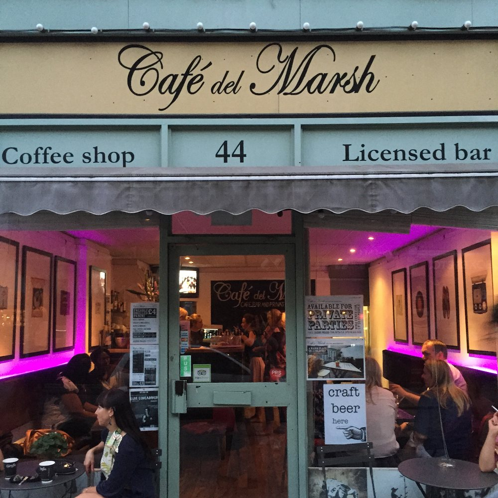
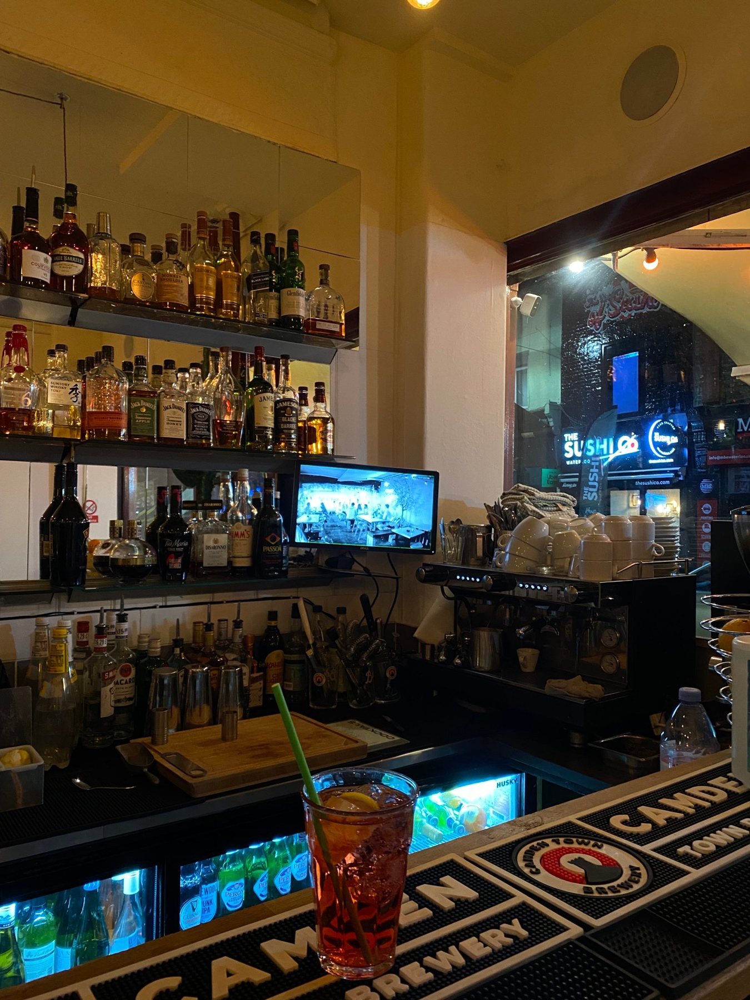

Coffee shop. Licensed bar.
A little independent on Lower Marsh that does both properly.
Number 44 is small at the front. A handful of tables, a proper espresso machine, a back bar that takes up most of a wall and prints on the walls. Walk through and it opens into the garden.
People come for a flat white, stay for a pint, and end up booking the place for their birthday. It is a short walk from Waterloo Station and a long way from the chain pubs around it.
The ‘smarter’ coffee shop in Waterloo
As quoted in the Evening Standard